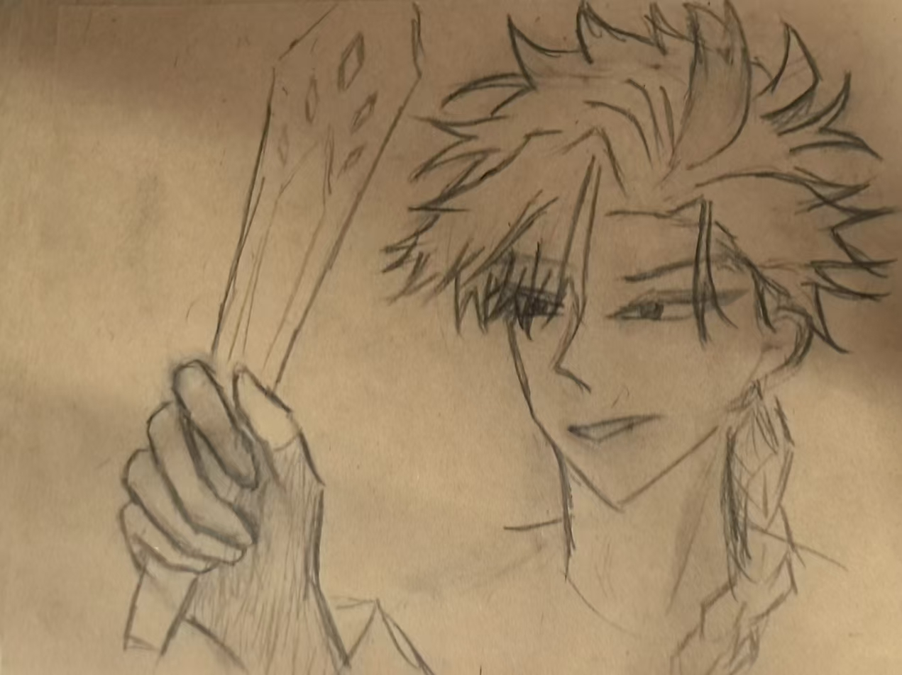
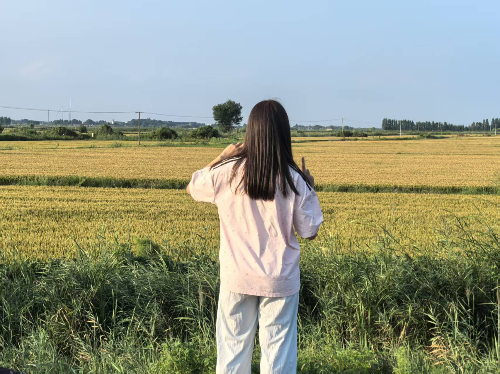

我常常想，文字是一种奇妙的容器。它盛放记忆的温度、思绪的褶皱，还有那些在岁月里一闪而过的、微不足道的念头。此刻，窗外的光线斜斜地洒在桌角，灰尘在光柱里缓慢地舞蹈，像极了多年前某个下午——祖母坐在藤椅里，手中的蒲扇有一搭没一搭地摇着，而我在旁边翻一本破旧的《安徒生童话》。那时我不懂什么叫“留白”，只觉得那些空白的地方，似乎也藏着风的声音。
后来我渐渐明白，无论是文字还是生活，都需要一些“空隙”。就像国画里的留白，音乐中的休止符，或者一封信末尾的余韵。所以我想在这里写很多很多字，把脑海里那些散落的片段拼凑起来；同时也留出一些位置，给未来的图片，给偶然的灵感，给还没发生的相遇。

记得有一年秋天，我去了一座很小的古镇。青石板路被雨水洗得发亮，两旁的老屋墙根处生着薄薄的青苔。我走进一家没有招牌的茶馆，老板是个戴眼镜的老人，正用毛笔在宣纸上写字。他说，他每天只写十张，写完就关门。我问他写的是什么，他把纸递过来——上面只有四个字：“随遇而安”。那幅字没有装裱，就随意地夹在书页里，却让我记到现在。也许真正重要的东西，从来不需要太用力地呈现。
从那以后，我开始收集各种各样的“空白”。比如一本笔记本里故意不写的页码，比如散步时绕远路经过的那片小树林，比如一首诗读完后沉默的几秒钟。这些没有内容的地方，反而让内容有了呼吸的余地。写这篇文章也是一样，如果全是密密麻麻的字，大概谁都会喘不过气吧。所以你看，下面又有一块空白等着被填充——图片也好，涂鸦也好，或者只是一片淡淡的颜色。

有时候我会想，如果记忆可以像网页一样，随时插入图片、调整布局，那该多好。但记忆偏偏是模糊的、带着毛边的，像一张被水浸过的旧照片。你能记起某个人的笑容，却想不起那天他穿的什么颜色的衣服；你能闻到雨后泥土的气味，却说不清雨究竟下了多久。这种模糊本身，也是一种留白。它让我们在回想的时候，有机会用自己的想象去填补那些空缺——而往往，填补进去的东西，比原本的更加温柔。
“所有真实的文字，都发生在词语与词语的缝隙里；所有珍贵的画面，都存在于目光与目光的停顿中。”
今天早上，我路过一家花店。门口摆着一桶白色的雏菊，花瓣上还沾着水珠。店主是个年轻的女孩，正蹲在地上给一盆薄荷换土。她抬头看见我，笑了笑说：“今天的花特别新鲜，要不要带一束？”我摇摇头，却站在那儿看了很久。那些花不需要被买走，它们只是安静地开着，就已经足够美好了。有些存在本身就是意义，不必被拥有，不必被记录，甚至不必被命名。
我把这个想法告诉了一位朋友。他说：“那你写的东西岂不是越来越散？”我想了想，回答他：“散就散吧。生活本来就是散的，像一捧沙子，握得越紧，流失得越快。不如摊开手掌，让风带走一些，留下一些。”他听了没说话，只是把杯子里的茶喝完，然后笑了。我知道他懂了。有些对话不需要结论，就像有些文章不需要结尾。
所以这篇文字也会这样继续下去——想到哪里，写到哪里。没有大纲，没有中心思想，甚至没有非说不可的道理。它只是一些句子，在纸上排着队，偶尔停下来，等一张图片，等一个逗号，等一次深呼吸。
不知不觉已经写了这么多。回头看看，好像什么也没说，又好像把很多都说尽了。这大概就是文字的魔法吧，它让你在看似无意义的地方，找到属于自己的意义。接下来我打算再留几个位置，也许你会放上一张家人合影，也许是一张随手拍的天空，也许只是空白。都可以。因为这张“信笺”是开放式的，它的最终模样，由你决定。
如果你问我，为什么不用更简洁的方式，比如直接写“此处插入图片”？我会说，因为我想让这些占位符也有点温度。它们不是冷冰冰的框，而是像相册里预留的透明角贴，等着你把珍贵的瞬间放进去。当你真正插入图片的那一刻，这些文字就会退到背景里，成为注解，成为陪衬——这多好啊，像一场安静的交接仪式。
最后，我想用一段很喜欢的诗来结束这些散乱的文字。诗的作者是波兰的扎加耶夫斯基，他写道：“尝试赞美这残缺的世界。”而我想说，尝试享受这些有留白的文字吧。愿你在阅读时，能听见风穿过句子的声音；愿你在插入图片时，能看见光落在像素上的样子。